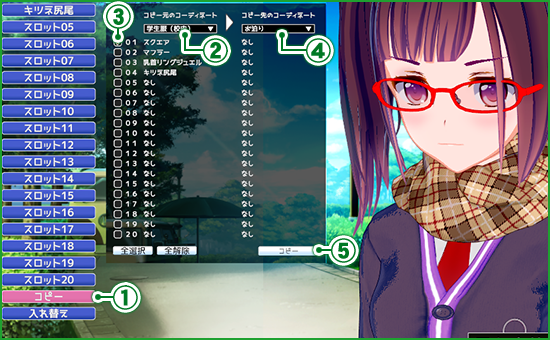
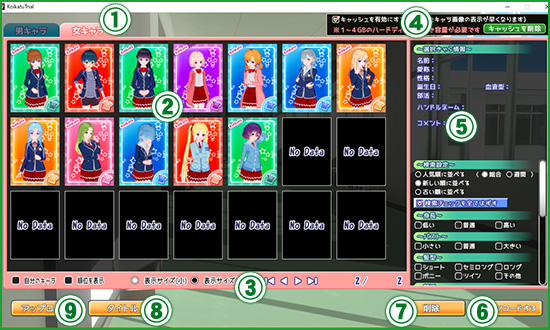

////////////////////////////////////////////////////////////////////////////////////////////////////////////////////////////////////
「 Koikatsu Character Makeup trial version 」 Copyright (C) ILLUSION
////////////////////////////////////////////////////////////////////////////////////////////////////////////////////////////////////
「 Koikatsu Character Makeup trial version 」 Copyright (C) ILLUSION
////////////////////////////////////////////////////////////////////////////////////////////////////////////////////////////////////
Introduction
・About this program
Thank you very much for downloading "Koikatsu Character Makeup Experience Edition" this time.
This program will be a program to experience the character makeup system of our company "Koikatsu!"
* Characters created by this program are scheduled to be usable for the main game.
・Basic operation
This program uses the following Windows basic operations.
① Left click ： Please press the left mouse button. ② Left button drag ： Hold down the left mouse button and move the mouse.
In this manual there is an expression "Please choose ~."
If there is a description of this, move the mouse cursor to "~" part and click the left mouse button.
(For example, if you select "Please select decision button", move the mouse cursor to "decision button" and click the left button of the mouse.)
* In some cases, you may need to perform operations such as copying, moving, deleting files.
If you do not understand here, please contact your PC manufacturer though you are in trouble.
Japanese input ： To input Japanese in the input field, please click on the input column, hold down the "Alt" key on the keyboard and press the "half-width / full-width" key before entering the letters.
※ Once you do this operation you will need to restart the game or enter Japanese until you do the same operation again.
Camera operation：In the character makeup scene, you can move and rotate the camera by the following operation.
Thank you very much for downloading "Koikatsu Character Makeup Experience Edition" this time.
This program will be a program to experience the character makeup system of our company "Koikatsu!"
* Characters created by this program are scheduled to be usable for the main game.
・Basic operation
This program uses the following Windows basic operations.
① Left click ： Please press the left mouse button. ② Left button drag ： Hold down the left mouse button and move the mouse.
In this manual there is an expression "Please choose ~."
If there is a description of this, move the mouse cursor to "~" part and click the left mouse button.
(For example, if you select "Please select decision button", move the mouse cursor to "decision button" and click the left button of the mouse.)
* In some cases, you may need to perform operations such as copying, moving, deleting files.
If you do not understand here, please contact your PC manufacturer though you are in trouble.
Japanese input ： To input Japanese in the input field, please click on the input column, hold down the "Alt" key on the keyboard and press the "half-width / full-width" key before entering the letters.
※ Once you do this operation you will need to restart the game or enter Japanese until you do the same operation again.
Camera operation：In the character makeup scene, you can move and rotate the camera by the following operation.
Terms of service
Please read before playing.
Back up the data and programs in the hard disk and strive for sensible behavior.
● This work is all fiction.
The persons appearing in the work, group name, place name, product name, incident, era background, occupation are all fictitious and are not related to actual ones at all.
In addition, this game is forbidden to purchase and play for those under the age of 18 due to the content of the work and directing.
All characters are over 18 years old.
In addition, we do not allow any file sharing, uploading, rental work on the Internet, or similar acts.
●Secondary use such as video distribution and screen shots is prohibited.
●This work includes extreme expressions such as violent, cruel scenes, acts committing crimes, etc. Please do not imitate absolutely.
Behavior within works is acting on consent and fiction. Actually doing the same thing as the content of this work may be punished by law.
● When playing for a long time, please take a small pause of about 10 to 15 minutes every 1 to 2 hours for your health.
If you have been experiencing muscle cramps or loss of consciousness temporarily when you are watching TV or receiving strong stimulus, please consult with your doctor before starting the game.
If such a symptom occurs while playing the game, stop the game immediately and get a doctor's diagnosis.
! Disclaimer!
● We are not responsible for any troubles, losses or damage caused by using this program.Back up the data and programs in the hard disk and strive for sensible behavior.
● This work is all fiction.
The persons appearing in the work, group name, place name, product name, incident, era background, occupation are all fictitious and are not related to actual ones at all.
In addition, this game is forbidden to purchase and play for those under the age of 18 due to the content of the work and directing.
All characters are over 18 years old.
! Prohibited matters!
●The act of duplicating or remodeling part or all of this program, data and manual without permission is prohibited by law.In addition, we do not allow any file sharing, uploading, rental work on the Internet, or similar acts.
●Secondary use such as video distribution and screen shots is prohibited.
●This work includes extreme expressions such as violent, cruel scenes, acts committing crimes, etc. Please do not imitate absolutely.
Behavior within works is acting on consent and fiction. Actually doing the same thing as the content of this work may be punished by law.
! note!
● Be careful not to get too close to the monitor.● When playing for a long time, please take a small pause of about 10 to 15 minutes every 1 to 2 hours for your health.
! caveat!
●Please avoid playing when you are tired and playing a long continuous game for health reasons.If you have been experiencing muscle cramps or loss of consciousness temporarily when you are watching TV or receiving strong stimulus, please consult with your doctor before starting the game.
If such a symptom occurs while playing the game, stop the game immediately and get a doctor's diagnosis.
Action environment
-
- Minimal
- Recommended
- OS
- Windows 7 / 8.1 / 10 64bit Japanese ※1
- DirectX
- Environment compatible with DirectX 11
- CPU
- Intel Core i3 4000 or later ※２
- Intel Core i5 4000 or higher ※２
- RAM
- RAM 4 GB or more
- RAM 8 GB or more
- Disk Space
- 8GB or more
- 10GB or more
- GPU
- VRAM 1GB or more ※３ ※４
- VRAM 2GB or more ※３
- ROM drive
- DVD-ROM drive
- Connected equipment
- Wheel mouse · keyboard, display resolution 1280 × 720 or more
-
※１ 32 bit version will be unsupported. Touch operation is not supported.
※２ Intel's CPU is recommended.
※３ "GeForce 500 series or higher by NVIDIA Corporation" and "ATI RADEON HD 6000 series or higher" graphic card、
Operation is not guaranteed except "Intel HD Graphics 4000 or higher".
Graphic systems with the notation "embedded in" or "main memory sharing" are not included in the recommended operating environment.
※４ VRAMが1GBの場合、簡易設定を「ノーマル」もしくは「パフォーマンス」に設定して下さい。
* There is a possibility that support can not be performed by second-hand personal computer / self made work computer.
* For laptops, it may be slower than the desktop computer of the same specification.
Manufacturer made personal computer is almost case not to guarantee operation when upgrading the driver version or adding the equipment.
Based on these, we will do our utmost to support you, but regarding the trouble due to the combination of PC parts and drivers etc.,
We can not guarantee the operation. We appreciate your understanding.
· Please inquire to the support of your PC hardware manufacturer whether your personal computer meets the essential operating environment.
· Please understand beforehand that the required free capacity will change depending on the environment.
· Even if the operating environment is satisfied, the driver etc. may be out of order if it is old.
· Drivers are obtained from each manufacturer on the Internet.
If you do not have an environment that can use the Internet, obtaining drivers becomes difficult and you may not be able to operate normally.
Installation method
① Right-click "Startup.exe" which is in the folder → Start up by running as administrator.
② If you select "Install the Koichatsu Character Makeup Trial Version" from the startup, the installer will be launched so please install according to the instructions on the screen.
* When you install to a specific place such as "System folder of" C: \ Program Files "or backup area such as" D: \ ", various data can not be saved.
Please do not install in corresponding place.
* It is recommended to install to the place specified by the installer without changing the installation destination.
* Since the meter of the screen does not advance, notation such as no reply comes out, since there is a possibility that work may be continuing on the back, as you can wait for sorry to trouble you.
③ When the installation is completed, the icon of "Koikatsu character makeup trial version" is displayed on the desktop.
Double click on the icon on the desktop to start "Initial setting"The screen will be displayed, please start the game from here.
※ Once you install, you do not need to install again.
② If you select "Install the Koichatsu Character Makeup Trial Version" from the startup, the installer will be launched so please install according to the instructions on the screen.
* When you install to a specific place such as "System folder of" C: \ Program Files "or backup area such as" D: \ ", various data can not be saved.
Please do not install in corresponding place.
* It is recommended to install to the place specified by the installer without changing the installation destination.
* Since the meter of the screen does not advance, notation such as no reply comes out, since there is a possibility that work may be continuing on the back, as you can wait for sorry to trouble you.
③ When the installation is completed, the icon of "Koikatsu character makeup trial version" is displayed on the desktop.
Double click on the icon on the desktop to start "Initial setting"The screen will be displayed, please start the game from here.
※ Once you install, you do not need to install again.
How to uninstall
Please remove "ILLUSION Koichatsu character makeup trial version" from "uninstall program" of "control panel".
Even if you delete the game, some files such as shot images and save data may remain.
If you want to completely delete, please delete the remaining file manually though it is sorry to trouble you.
Even if you delete the game, some files such as shot images and save data may remain.
If you want to completely delete, please delete the remaining file manually though it is sorry to trouble you.
Initial setting
When launching "Koikatsu Character Makeup Experience Edition" on the desktop "Initial Setting" is displayed.
-
① Screen size
Specify the image resolution to display.
② Full-screen representation When checked, "Full Screen" will be launched, Removal will start up in "Window".
If it is not displayed correctly in "Full Screen" please set it to "Window".
③ Simple setting・PerformanceIt is a setting that places no burden on the personal computer.
・NormalIt is an intermediate setting between speed and quality.
・QualityIt is setting for high specification.
④ Display When using multiple displays Select the display to display in "Full Screen".
* It does not matter if there is only one display.
⑤ Game start We will start trial version. ※title screenIs displayed.
⑥ Read the manual This manual is displayed.
⑦ System information Displays the personal computer environment being used.
⑧ Open installation location Open the folder where the game is installed.
⑨ End I will finish the game.
⑩ Open trial version's character folder Open the folder that stores the character data of the Koichatsu character makeup trial version.
User folder description
When you open "Koikatsu character makeup trial version" installation destination, there is a [UserData] folder. Various saved data is in this folder.
※ The standard installation location is C:\illusion\KoikatuTrial Here
・[ Bg ] ： Character makeupA background image that can be used in. ・[ Coordinate ] ： Saved costume setsoSaved costume setIs stored.
・[ Chara ] ： In the "female" folder in the folder SaveThe stored character data is stored. ※ There is no male character makeup function in trial version.
・[ CardFrame ] ： Shooting modeThe image for the front frame and the back frame to be used in is stored.
* The front frame is stored in "Front" in the folder, and the back frame image is stored in the "Back" folder.
※ The standard installation location is C:\illusion\KoikatuTrial Here
・[ Bg ] ： Character makeupA background image that can be used in. ・[ Coordinate ] ： Saved costume setsoSaved costume setIs stored.
・[ Chara ] ： In the "female" folder in the folder SaveThe stored character data is stored. ※ There is no male character makeup function in trial version.
・[ CardFrame ] ： Shooting modeThe image for the front frame and the back frame to be used in is stored.
* The front frame is stored in "Front" in the folder, and the back frame image is stored in the "Back" folder.
Title screen
-
① Character makeup
I will start character make-up.
② アップローダー 作成したキャラをゲーム内から「 キャラクターアップローダー 」に投稿する事が出来ます。
※パソコンにインターネット接続環境が必要となります。
※利用前に必ず アップローダー利用規約 をご覧下さい。
③ ダウンローダー 「 キャラクターアップローダー 」のキャラをゲーム内からダウンロードする事が出来ます。
※パソコンにインターネット接続環境が必要となります。
② エンド ゲームを終了します。
キャラメイク
キャラの容姿・衣装等を設定することができます。 ※体験版では選べる種類等の一部が制限されています。

-
① メインメニュー メイク部位とシステムです。選択すると「② メイク項目」に詳細が表示されます。
※左から「 顔 」「 身体 」「 髪 」「 服装 」「 アクセサリ 」「 プロフィール 」
「 セーブ・ロード 」「 BGM切り替え 」となります。
※「 BGM切り替え 」は選択するとＯＮ／ＯＦＦが切り替わります。
② メイク項目 「① メインメニュー」で選択された項目の詳細を表示します。
各部位のカスタムを「ボタン選択」や「スライダー操作」等で行います。
※詳しくは 顔型や体型の調整 種類と色の選択 アクセサリ を御覧下さい。
③ 確認メニュー キャラの状態を変更して各種確認を行うことが出来ます。
④ コーディネートタイプ 着用する状況を選択します。
服装とアクセサリーの設定はコーディネートタイプごとに記憶されます。
⑤ キャラビュー メイク中のキャラを表示しています。
「カメラ操作」で３６０°自由に回転させることが出来ます。
⑥ ネームプレート 現在メイクしているキャラの名前が表示されます。
※名前は プロフィール にて変更することが出来ます。
⑦ 戻る 「 タイトル画面 」に移動します。
●顔型や体型の調整（スライダー操作） ： 顔型や体型を変更する場合はスライダーでの操作となります。以下、例として体型変更方法を記載します。
-
① 「メインメニュー」より「体」を選択します。
② 「メイク項目」から調整したい部位を選択します。
③ 調整可能部位とスライダーが表示されます。
※スライダー部分、または右側の「数値入力」で調整することが出来ます。
※顔型、体型以外のスライダー操作も同じ操作方法となります。

●種類と色の選択 ： 多くの項目は「種類」と「色」の変更が可能です。以下、例として前髪の種類と色変更方法を記載します。
-
①
「メインメニュー」より「髪」を選択します。
② 「メイク項目」から「前髪」を選択します。
③ 前髪用のメイク項目が表示されますので「前髪の種類」を選択します。
④ 前髪用の「選択ウインドウ」が表示されますので、変えたい髪を選択します。
⑤ メイク項目の「前髪の基本の色」を選択します。
⑥ 色変更用のウインドウが表示されますので「ピッカー」「スライダー」「プリセット」の
いずれかから色を選択します。
※選んでいる服やアクセサリによって「サブカラー」が選択できる場合があります。
※色の選択は「左ボタンクリック」もしくは「左ボタンドラッグ」で行います。
※「スライダー」の数値部分は選択後にキーボードのテンキーで数値入力が可能です。
※「プリセット」の「01～05」は右端の項目を「左ボタンクリック」すると
「見本」に表示されている色を保存します。
※「透明度」が変更できる項目に関しては「透明度」のスライダーが表示されます。
●衣装設定 ： 服、下着、靴、靴下等の設定を行うことが出来ます。

-
①
状況を選択します。
② 「メインメニュー」より「服」を選択します。
③ 「メイク項目」から設定したい部位を選択します。
④ 変更したい「種類」を選択します。
※色変え可能 の表記がある項目は 色の変更を行うことが出来ます。
⑤ 一覧が表示されますので着せたい服を選択します。
●アクセサリ設定 ： アクセサリは最大20個まで好きな大きさ・好きな位置に付けることが出来ます。以下、例として眼鏡を頭にかける方法を記載します。
-
①
「メインメニュー」より「アクセサリ」を選択します。
② 好きな番号を選択します。 ※例では「スロット01」を選択します。
③ メイク項目の「タイプ」を選択します。
④ 一覧から「 顔 」を選択します。
⑤ 顔用アクセサリ項目が追加されますので「種類」を選択します。
⑥ 一覧より掛けたい眼鏡を選択します。
⑦ 「調整01」を選択します。
※アクセサリを部分的に調整できる場合「調整02」が表示されます。
⑧ 調整用の項目が表示されますので、各項目の調整を行います。
各項目の「Ｘ、Ｙ、Ｚ」を「左ボタンドラッグ」で操作するか「数値入力」で
調整することが出来ます。
・位置X ： 左右横方向の位置を調整します。
・位置Y ： 上下縦方向の位置を調整します。
・位置Z ： 前後の位置を調整します。
・角度X ： 縦回転させます。
・角度Y ： 横回転させます。
・角度Z ： 時計回転させます。
・拡縮X ： 横方向の大きさを変更します。
・拡縮Y ： 縦方向の大きさを変更します。
・拡縮Z ： 厚みを変更します。
※アクセサリの親を変更すると、親の動きに追随して動くようになります。
-
■「コピー」 ： 設定したアクセサリを他のコーディネートタイプにコピーすることが出来ます。 - 
-
①
アクセサリ編集後、「メイク項目」の「コピー」を選択します。
② 「コピー元」のコーディネートタイプを選択します。
③ コピーしたいアクセサリを選択します。
④ 「コピー先」のコーディネートタイプを選択します。
⑤ 選択したアクセサリがコピーされます。
-
■「入れ替え」 ： アクセサリの「調整」値を他のスロットにコピーしたり、複製を作ることが出来ます。 -
①
アクセサリ編集後、「メイク項目」の「入れ替え」を選択します。
② 「コピー元」のアクセサリスロットを選択します。
③ 「コピー先」のアクセサリスロットを選択します。
④ コピーする項目を選択します。
・スロットをコピー ：「コピー元」アクセサリを「コピー先」に全てコピーします。
・左右の親を切り替える ： 左耳右耳等、左右の表記がある「親」を指定している場合、
「スロットをコピー」選択時に逆の親に変更されます。
・調整をコピー ： 「コピー元」アクセサリの調整値のみをコピーします。
・左右反転コピー ：「コピー元」アクセサリの調整値「角度Y」のみを反転してにコピーします。
・上下反転コピー ： 「コピー元」アクセサリの調整値「角度X」のみを反転してにコピーします。
※アクセサリを部分的に調整できる場合「調整02」が表示されます。
●キャラのプロフィール設定 ： キャラの名前や性格、好み等のキャラの個性に関わる設定を行うことが出来ます。

-
①
「メインメニュー」より「プロフィール」を選択します。
② 「キャラ」を選択すると設定画面が表示されます。
③ プロフィールを設定することが出来きます。
●衣装のセーブ・ロード・削除 ： 設定した服装とアクセサリの管理を行うことが出来ます。
-
①
「メインメニュー」より「セーブ・ロード」を選択します。
② 「服の保存と削除」を選択すると衣装データの管理が表示されます。
③ 保存されている衣装データの一覧です。上書きセーブ・ロードを行う際にこちらから選択します。
④ 一覧の並び順を変更することができます。
⑤ 管理コマンドです。実行したい項目を選択します。
・削除 ： 一覧で選択している衣装データを削除します。
※ゲームだけではなく、パソコン自体からデータが削除されますのでご注意下さい。
・新規セーブ ： 現在キャラビューに表示されている衣装を保存します。
※保存する際に名前入力欄が表示されます。※保存が完了すると一覧に追加されます。
・上書きセーブ ： 一覧で選択している衣装データを現在表示されている衣装に上書きします。
-
■ロード ： 衣装データから読み込みたい項目を選択して読み込むことが出来ます。 -
①
「メインメニュー」より「セーブ・ロード」を選択します。
② 「服読み込み」を選択すると読み込み画面が表示されます。
③ 保存されている衣装データの一覧です。読み込みたい衣装を選択します。
④ 一覧の並び順を変更することができます。
⑤ 読み込む項目を選択することが出来ます。
⑥ 選択されている情報を読み込みます。
※保存していない情報は破棄されますのでご注意下さい。
●キャラの新規セーブ ： キャラの新規セーブを行う際には、キャラセーブデータで使用するプレビュー画像を作成します。
-
①
「メインメニュー」より「セーブ・ロード」を選択します。
② 「キャラ保存と削除」を選択するとキャラデータの管理が表示されます。
③ 「新規セーブ」を選択すると撮影モードに移行します。
④ 「学生証画像（ゲーム本編で使用されるプロフィール画像）」を作成します。
赤線のガイドに入るように位置・角度を調整します。
⑤ 表情やポーズ等を設定します。
⑥ 「学生証画像」を撮影します。
撮影した画像は、画面左側の「学生証画像」にて確認する事ができます。
⑦ キャラセーブデータ用のプレビュー画像を作成します。
「カード画像を撮影」を選択します。
⑧ 枠内に入るように位置・角度を調整します。
⑨ 表情やポーズ等を設定します。
⑩ カード画像を撮影します。
撮影した画像は、画面左側の「カード画像」にて確認する事ができます。
⑪ 撮影した画像を確認する事ができます。
⑫ 撮影した画像でキャラセーブデータを作成します。
※保存が完了するとキャラデータの一覧に撮影した画像で追加されます。

●キャラの上書きセーブ・削除 ： キャラの上書きセーブを行う際には、プレビュー画像の再作成を行うか選択することが出来ます。
-
①
「メインメニュー」より「セーブ・ロード」を選択します。
② 「キャラ保存と削除」を選択するとキャラデータの管理が表示されます。
③ 保存されているキャラデータの一覧です。上書きセーブを行う際にこちらから選択します。
④ 一覧の並び順を変更することができます。
⑤ 管理コマンドです。実行したい項目を選択します。
・削除 ： 一覧で選択しているキャラデータを削除します。
※ゲームだけではなく、パソコン自体からデータが削除されますのでご注意下さい。
・上書きセーブ ： 一覧で選択しているキャラデータを現在のキャラに上書きします。
※「上書きセーブ」を選択すると、確認画面が表示されます。
⑥ 「変更して保存」を選択すると「撮影モード」に移行します。
「変更せず保存」を選択するとデータだけを上書きします。
●キャラのロード ： 保存したキャラの読み込みを行うことが出来ます。容姿や衣装のみの読み込みも行うことが出来ます。
-
①
「メインメニュー」より「セーブ・ロード」を選択します。
② 「キャラ読み込み」を選択すると読み込み画面が表示されます。
③ 保存されているキャラデータの一覧です。読み込みたいキャラを選択します。
④ 一覧の並び順を変更することができます。
⑤ 読み込む項目を選択することが出来ます。
⑥ 選択されているキャラ情報を読み込みます。
※保存していない情報は破棄されますのでご注意下さい。
●アップローダー ： 弊社ホームページで公開している「 キャラクターアップローダー 」に作成したキャラをゲーム内から投稿する事が出来ます。
-
※パソコンにインターネット接続環境が必要となります。必ず ご利用規約 を御覧下さい。
※状況によりアップロードされたキャラを弊社で確認する形式になる可能性があります。
その場合、アップロードから公開まで時間がかかります事を、予めご了承下さい。
■体験版でのアップロードは 4月26日18時までとなります。
以後は4月27日発売予定の製品版のみアップロードが可能となります。
※体験版キャラデータのダウンロードはアップロード終了後も可能となります。
製品版キャラデータはキャラリストに表示されず体験版では使用出来ません。
※日程は予告なく変更される場合もございます。
予めご了承下さい。
-
① 男キャラ ／ 女キャラ
キャラリストの性別を切り替えます。 ※体験版では使用することが出来ません。
② キャラリスト キャラメイク、ダウンロードで保存されたキャラ一覧です。
・名前 ： リストを名前順に並び替えます。
・日付 ： リストを登録した日付順に並び替えます。
③ キャラ画像 現在選択されているキャラの画像と詳細です。
④ ハンドルネーム アップローダーに表記される投稿者の名前です。 ※無記入可。16文字まで。
⑤ コメント アップロードするキャラのコメントを記入して下さい。 ※無記入可。80文字まで。
⑥ 利用規約 ご利用規約を表示します。必ずご確認下さい。
⑦ アップロード 選択しているキャラをアップロードします。
⑧ タイトル タイトル画面に戻ります。
⑨ダウンロードへ ダウンロード画面に移行します。
●ダウンローダー ： 弊社ホームページで公開している「 キャラクターアップローダー 」からキャラをゲーム内からダウンロードすることが出来ます。
-
※パソコンにインターネット接続環境が必要となります。必ず ご利用規約 を御覧下さい。
 ※ダウンロードしたデータは chara フォルダ に保存されます。
■体験版でのアップロードは 4月26日18時までとなります。
以後は4月27日発売予定の製品版のみアップロードが可能となります。
※体験版キャラデータのダウンロードはアップロード終了後も可能となります。
製品版キャラデータはキャラリストに表示されず体験版では使用出来ません。
※日程は予告なく変更される場合もございます。
予めご了承下さい。
-
① 男キャラ ／ 女キャラ
キャラリストの性別を切り替えます。 ※体験版では使用することが出来ません。
② キャラリスト キャラクターアップローダーで公開されているキャラ一覧です。
③ リスト操作 キャラリストの表示を切り替えることが出来ます。
・自分のキャラ ： 自分でアップロードしたキャラのみを表示します。
・順位を表示 ： リストに現在の順位を表示します。
・表示サイズ(小) ： リストを１ページ２１キャラ表示に変更します。
・表示サイズ(大) ： リストを１ページ１０キャラ表示に変更します。
・◀/▶ ： リストを 前のページ／次のページ に切り替えます。
・|◀/▶| ： リストの 最初のページ／最後のページ に切り替えます。
・ｘ／ｘ ： 現在のページ／総ページ数 が表示されます。
④プロフィール 現在リストで選択されているキャラのプロフィールです。
⑤検索条件 選択された条件に沿ったキャラをリストに表示します。
⑥ダウンロード リストで選択しているキャラをダウンロードします。
⑦削除 選択したキャラをアップローダーから削除します。
※「リスト操作」で「自分のキャラ」選択時のみ使用出来ます。
⑧タイトル タイトル画面に戻ります。
⑨アップロードへ アップロード画面に移行します。
コンフィグ
ゲーム内の表現・音量の調整を行う事ができます。
-
①
「メインメニュー」より「セーブ・ロード」を選択します。
② 「コンフィグ」を選択すると設定画面が表示されます。
③ ゲーム内の表現・音量の調整を行う事ができます。
・影の表現 ： 滑らか・くっきり等キャラ表現の変更を行うことが出来ます。
・影の濃さ ： 影の濃さを調整することが出来ます。
・アウトラインの濃さ ： 輪郭線の濃さを調整することが出来ます。
・アウトラインの太さ ： 輪郭線の太さを調整することが出来ます。
・ＢＧＭの音量 ： BGMの音量を調整することが出来ます。
・効果音の音量 ： 効果音の音量を調整することが出来ます。
・注視点を表示する ： 注視点（カメラの基準点）の表示を切り替えます。
キーボードショートカットキー
-
キーボードの「 Ｆ2 」キーを押すとショートカットキー 一覧を表示します。
トラブルシューティング
-
ゲームが起動しない、マニュアルに従って操作しても正常に動かない等トラブルが発生した場合、症状に合わせて対処方法をお試し下さい。
●症状1： ゲームが起動しない、突然止まってしまう、動作がおかしい（キャラクターが真っ黒になる、もしくは真っ白になる）等ゲームが正常に動作しないという場合、動作環境を満たしていない事がほとんどです。 まずはお使いのパソコンがゲームの動作環境を満たしているかご確認下さい。
※初期設定にあります「システム情報」を起動するとお使いのパソコンの性能が表示されます。 ゲームの動作環境はこちらに記載されていますのでご確認下さい。
※下記の操作はお客様の自己の責任のもとで行って下さい。
弊社ではできる限りのサポートを行ってまいりますが、デバイスドライバなどの導入における事故に関しましては一切責任を負いませんのでご了承下さい。
ドライバのインストールや各種操作に不安がある場合は、お使いのパソコンメーカーにご相談下さい。
①グラフィックカードドライバの更新を行って下さい。
動作環境を満たしていて動作に異常がある場合、グラフィックカードドライバのバージョンが古い事が原因になっているケースがあります。
グラフィックカードドライバの更新につきましてはお使いのパソコンメーカー、もしくはお使いのグラフィックカードメーカーへお問い合わせ下さい。
また、簡易設定をノーマルまたはパフォーマンスに変更し、表示形式をウィンドウに変更して下さい。
②常駐プログラムの停止
アンチウイルスソフト等の常駐プログラムが稼動していますと、正常に動作しない場合がございますので、ゲームの起動時は一旦アンチウイルスソフト等を停止させて下さい。
常駐プログラムの停止方法につきましては常駐ソフトのマニュアルをご覧下さい。
③各種ドライバの更新
マザーボードやサウンドカードが原因の場合もございます。
各デバイスドライバを最新のバージョンに更新して下さい。
※詳しくはお使いのパソコンメーカー、もしくは各ハードウェアの販売元へお問い合わせ下さい。
④Windowsの再インストール
Windowsが不安定になっているケースも考えられます。バックアップをとってからHDDをフォーマットしてWindowsを入れ直しますと、正常に戻る場合がございます。
※バックアップは十分注意して行って下さい。大切なデータを紛失された場合、弊社では責任を負いかねますのでご注意下さい。
※詳しくはお使いのパソコンメーカー、もしくはMicrosoftへお問い合わせ下さい。
-
● Symptom 2: Operation settings and game save are not savedThere is a possibility that various data will not be saved unless the administrator authority is set.
Please follow the steps below to set administrator privileges.
① Right click the shortcut of "Koikatsu character makeup trial version" on the desktop and select "Property"。
② Select "Compatibility" from the property screen and check "Execute this program as administrator"
③ Please select "apply" → "OK" in that order, please try the operation of the game.